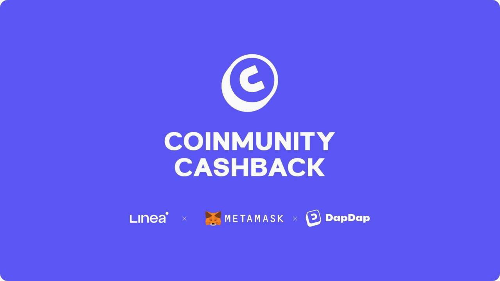

Rocket Lab (RKLB)
W kontekscie: Fizyka orbitalna, orbity i operacje
Czym jest spółka w tym kontekście. Rocket Lab to wertykalnie zintegrowana firma kosmiczna z dwoma segmentami: Launch Services (starty rakiet) oraz Space Systems (satelity, podzespoły, optyka, oprogramowanie, panele słoneczne). To właśnie Space Systems czyni z niej istotnego gracza dla tematu orbitalnych centrów danych: jeśli ktoś chce postawić na orbicie konstelację modułów obliczeniowych, potrzebuje busa satelitarnego (platformy, która utrzymuje moduł przy życiu - zasila, chłodzi, orientuje i podtrzymuje łączność) oraz całego zestawu podzespołów do sterowania położeniem. Rocket Lab dostarcza jedno i drugie z własnej produkcji.
Co konkretnie buduje. Spółka oferuje rodzinę platform: Photon (200-300 kg, LEO), Pioneer (payload do 120 kg, misje re-entry i dynamic operations), Explorer (duża delta-V, głęboki kosmos - użyty w misji ESCAPADE na Marsa), Lightning (~3 kW, żywotność >12 lat na LEO, baza kontraktów obronnych) oraz Flatellite - nową platformę zaprojektowaną wprost pod duże konstelacje LEO, ogłoszoną w 2025 r. (🔵 Rocket Lab 10-K 2025; product pages, dostęp 16.06.2026). Architektura Flatellite (płaski, sztaplowalny satelita pod masową produkcję i gęste upakowanie w fairingu) jest dokładnie tym kierunkiem, który rozwija wątek Montaż on-orbit / in-space assembly vs wynoszenie gotowych modułów, ograniczenie fairingu oraz Skalowanie mocy do MW-GW: liczba modułów na 1 MW, gęstość upakowania.
ADCS i podzespoły sterowania położeniem. Po przejęciu Sinclair Interplanetary Rocket Lab produkuje komponenty ADCS (Attitude Determination and Control System - układ wyznaczania i kontroli orientacji satelity): koła reakcyjne (reaction wheels - obracają satelitą bez zużycia paliwa, wykorzystując zachowanie momentu pędu) oraz star trackery (kamery rozpoznające układ gwiazd, które dają satelicie precyzyjną orientację). Dla orbitalnego centrum danych precyzyjne ADCS jest warunkiem brzegowym: panele muszą stale celować w Słońce, radiatory w zimną przestrzeń, a anteny/łącza optyczne w punkty odbioru. Bez sprawnego utrzymania orientacji nie ma ani zasilania, ani chłodzenia, ani downlinku. To łączy się z wątkiem Formation flying / utrzymanie szyku konstelacji - przy gęstych konstelacjach utrzymanie szyku zależy od jakości ADCS i station-keepingu.
Dla inwestora: ekspozycja Rocket Lab na orbitalne centra danych jest dziś przede wszystkim ekspozycją na produkcję komponentów i platform, a nie na samą operację obliczeniową. Spółka sprzedaje "łopaty w gorączce złota" - busy, ADCS, panele - niezależnie od tego, który operator wygra wyścig o orbitalny compute.
Materiały spółki
Grafiki z materiałów spółki / IR (prawa właściciela, użycie redakcyjne). Pełny rejestr:
Spolki/assets/_licencje.json.

. To nie jest poboczny komunikat: spółka deklaruje, że posiada największą zainstalowaną produkcyjnie zdolność wytwarzania paneli kosmicznych typu GaAs/Ge w USA i jest jedynym w pełni wertykalnie zintegrowanym dostawcą energii kosmicznej (🔵 Rocket Lab PR, 26.02.2026). Dziedzictwo tej linii to przejęcie SolAero.
Dlaczego dwie technologie ogniw. Tradycyjne ogniwa kosmiczne to struktury wielozłączowe na bazie arsenku galu (GaAs) i germanu - bardzo sprawne (rozwija to wątek Sprawność ogniw kosmicznych vs krzem naziemny), ale uzależniające od krytycznych minerałów o ograniczonej podaży i ryzyku geopolitycznym. Argument Rocket Lab za krzemem: tańszy, lżejszy, modułowy i łatwiejszy do masowej produkcji - czyli właśnie te cechy, które są potrzebne, gdy trzeba zasilić nie jeden satelita, lecz orbitalne centrum danych liczone w setkach MW lub GW (🔵 Rocket Lab PR, 26.02.2026). Spółka oferuje też panele hybrydowe, łączące ogniwa wysokosprawne z krzemowymi. To bezpośrednio adresuje Gęstość masowa: W/kg, masa/m2 i przeliczenie "200 MW" oraz Power beaming i "energia jako usługa": kto walczy o ten rynek.
Powiązanie z fizyką ogniw - twarde sprawności BOL. Dla ogniw wielozłączowych GaAs/Ge linii SolAero spółka ujawnia konkretne sprawności BOL (Begin of Life - sprawność na początku życia, przed degradacją radiacyjną): IMM-β (5-junction InGaP/GaAs, inverted metamorphic) 33,3% BOL, IMM-α 32,0% BOL, ZTJ-Ω (triple-junction, optymalizowane LEO) 30,2% BOL, Z4J (quad-junction, podłoże Ge) 30,0% BOL (🔵 Rocket Lab PR 08.03.2022; 🔵/🟠 SolAero/PV Magazine). W 2026 r. spółka deklaruje, że najnowsze ogniwa i CIC osiągają sprawność "do 34%" (🔵 Rocket Lab Solar Solutions product page, 2026). Dla porównania - to klucz do oceny przewagi krzemu vs GaAs w warunkach orbitalnych, patrz Degradacja PV od promieniowania: BOL vs EOL. Natomiast sprawność BOL i parametr W/kg nowych krzemowych paneli ogłoszonych 26.02.2026 pozostają NIE UJAWNIONE (komunikat jest jakościowy: "low cost per watt", "mass-manufacturable, lightweight", bez twardych liczb) (🔵 Rocket Lab PR, 26.02.2026). Sam parametr W/kg standardowych paneli Rocket Lab/SolAero także jest NIE UJAWNIONY w specyfikacjach spółki; jako proxy technologiczne: panel ExoTerra z ogniwami SolAero ZTJ osiąga ~140 W/kg na małych satelitach, a array deep-space NASA EESP z ogniwami SolAero IMM ok. 9,52 W/kg na poziomie całego array z mechanizmami (🟠 ExoTerra brochure; 🟠 NASA NTRS - oba to proxy, nie produkty Rocket Lab). Rocket Lab nie buduje też klasycznego ROSA (Roll-Out Solar Array) jako produktu flagowego - to technologia Redwire; pozycjonowanie obu graczy różni się architekturą rozkładania paneli.
Dla inwestora: to jest najczystsza ekspozycja Rocket Lab na orbitalne centra danych - spółka chce być dostawcą energii dla tej infrastruktury. Mechanizm wartości: każdy 1 GW mocy elektrycznej dla ładunku obliczeniowego wymaga co najmniej 1 GW mocy paneli, a po stratach i degradacji prawdopodobnie więcej, a Rocket Lab pozycjonuje się jako jedyny zintegrowany dostawca w USA z dwiema komplementarnymi technologiami ogniw, co zabezpiecza łańcuch dostaw przed ryzykiem minerałów krytycznych.
W kontekscie: Niezawodność, serwisowanie i cykl życia sprzętu
Heritage jako waluta niezawodności. Rocket Lab buduje przewagę na udokumentowanym dziedzictwie lotnym (flight heritage) ponad 1700 misji komponentów wyniesionych w przestrzeń (🔵/🟠 Rocket Lab; F1 sekcja 5). W kontekście orbitalnego centrum danych to istotne, bo sprzęt na orbicie jest praktycznie nieserwisowalny - nie ma MEV-a dla pojedynczej karty obliczeniowej i nie ma hot-swapu. To rozwija wątek Brak napraw in-situ a robotyczna obsługa (Northrop Grumman MEV i następcy) oraz Redundancja N+1, degradacja kontrolowana, brak hot-swap; zarządzanie awariami nodów. Komponent z heritage liczonym w setkach lotów to mniejsze ryzyko "frozen hardware" - sprzętu zamrożonego na orbicie bez możliwości naprawy.
Platforma Lightning jako wzorzec żywotności. Lightning ma deklarowaną żywotność >12 lat na LEO (🔵 Rocket Lab 10-K 2025) - to długo jak na satelitę, ale jednocześnie obnaża fundamentalny problem orbitalnego compute: cykl odświeżania GPU na Ziemi to ~3-5 lat, a platforma żyje >12 lat. Starzenie technologiczne biegnie szybciej niż żywotność platformy - przy cyklu odświeżania GPU ~3-5 lat i żywotności >12 lat sprzęt obliczeniowy przejdzie ok. 2-4 cykle odświeżania, zanim platforma wyjdzie z użycia. To napięcie ekonomiczne rozwija wątek Starzenie technologiczne (prawo Moore'a) szybsze niż żywotność platformy - problem ekonomiczny.
Rozszerzenie o robotykę. Rocket Lab ogłosiło przejęcie Motiv Space Systems 7 maja 2026 r. (definitive agreement), a transakcję zamknięto 26 maja 2026 r., rozszerzając możliwości manipulatorów (ramion robotycznych) kosmicznych (🔵 Rocket Lab Q1 2026 Earnings Release, 07.05.2026; Rocket Lab PR, 26.05.2026). To kierunek w stronę robotycznej obsługi orbitalnej - wymiany modułów, montażu - co bezpośrednio dotyka Deorbitacja i wymiana całych modułów a upgrade. Konkretne SLA czy parametry uptime klasy data center (99,99%) dla platform Rocket Lab: NIE UJAWNIONE w F1 - to nie jest dziś produkt sprzedawany z gwarancją dostępności jak naziemne DC.
Dla inwestora: wartość Rocket Lab w wymiarze niezawodności to heritage i wertykalna kontrola jakości, nie gwarancje SLA. Mechanizm: prime contractorzy (SDA, MDA) płacą premię za komponenty o udokumentowanej niezawodności, bo awaria na orbicie jest niemożliwa do naprawy i kosztuje cały payload.
W kontekscie: Ekonomika i koszty całkowite (TCO)
Rola w równaniu kosztu wyniesienia. Koszt postawienia orbitalnego centrum danych zaczyna się od kosztu wyniesienia masy na orbitę - to rozwija wątek Aktualny koszt wyniesienia: ile naprawdę kosztuje kilogram na orbicie. Rocket Lab ma w tym dwie role. Electron to mała rakieta nośna (payload ~300 kg do LEO), według spółki najczęściej startująca orbitalna mała rakieta na świecie, z 21 misjami (Electron + HASTE) w 2025 r. - rekord roczny, w górę z 16 w 2024 r. (🔵 Rocket Lab Q4 2025 Earnings Release, 26.02.2026). Electron nie jest jednak narzędziem do budowy gigawatowego compute - jego ładunek jest za mały. Tę rolę ma przejąć Neutron.
Neutron - warunek brzegowy ekonomiki. Neutron to rakieta średnia (medium-lift), pozycjonowana jako konkurent Falcona 9, przeznaczona do konstelacji i misji narodowych. Pierwszy lot został opóźniony do Q4 2026 po awarii testu zbiornika stopnia pierwszego (🔵 F1 sekcja 2). Bez Neutrona Rocket Lab nie ma własnego nośnika do masowego, taniego wynoszenia dużych konstelacji - a zdolność do tanich, częstych startów jest jedną z kluczowych zmiennych weryfikujących tezę, czy orbitalne centrum danych jest "co najmniej 2x droższe niż naziemne", co rozwija wątek Weryfikacja tezy "orbitalne co najmniej 2x droższe niż naziemne" oraz Krzywa kosztu vs skala i learning curve.
Ceny za kg i koszt startu - twarde szacunki (źródła wtórne). Spółka nie publikuje cennika, ale dane rynkowe pozwalają oszacować rząd wielkości. Electron: rynkowa cena startu ~7,5 mln USD za ~300 kg do LEO, co przekłada się na ~25 000 USD/kg (🟠 Orbital Radar 22.05.2026; 🟠 Space Nexus 18.02.2026). W Q1 2026 średni przychód na start Electron wyniósł ~9,3 mln USD (vs 7,1 mln USD w Q1 2025), a szacowany koszt startu ~5,4 mln USD (vs 5,7 mln USD w Q1 2025) (🟠 The Tech Marketer, 08.05.2026). Neutron ma mieć docelową cenę startu 50-55 mln USD przy ~13 000 kg do LEO w trybie ekspendowalnym (~3 850-4 230 USD/kg) i ~8 000 kg w trybie reusable (~6 250-6 900 USD/kg) (🟠 Interesting Engineering 27.08.2024; 🟠 Space Nexus 2026). Dla porównania Falcon 9: ~67 mln USD za start przy ~22 800 kg do LEO, czyli ~2 700-3 000 USD/kg (🟠 Space Nexus/Orbital Radar 2026); deklarowanym celem Rocket Lab jest, by Neutron "matchował" Falcona 9 na poziomie kosztu/kg (🟠 cytat Adama Spice'a). To centralna zmienna modelu TCO orbitalnego DC (patrz Masa per MW, CAPEX i OPEX: z czego składa się rachunek). To, co F1 dostarcza twardo, to dynamika marży: marża brutto GAAP rośnie z 26,6% (FY2024) przez 34,4% (FY2025) do 38,2% (Q1 2026), a marża non-GAAP do ~44% (🔵 Rocket Lab IR, Q1 2026 z 07.05.2026). Wertykalna integracja (produkcja podzespołów we własnym łańcuchu) może być jednym z mechanizmów tej poprawy marży i obniżenia kosztu jednostkowego, obok miksu kontraktów i efektu skali.
xychart-beta
title "Szacowany koszt wyniesienia (USD/kg do LEO)"
x-axis ["Electron", "Neutron (exp.)", "Falcon 9"]
y-axis "USD/kg" 0 --> 26000
bar [25000, 4040, 2850]
Rys. - Electron jako mała rakieta ma wysoki koszt/kg; Neutron ma zbliżyć Rocket Lab do poziomu Falcona 9 (wartości środkowe z widełek). Dane: 🟠 Orbital Radar / Space Nexus / Interesting Engineering (2024-2026) - szacunki wtórne, nie cennik IR.
Dla inwestora: dla tematu TCO Rocket Lab jest jednocześnie dostawcą rakiety (strona kosztu wyniesienia) i komponentów (strona kosztu satelity). Ryzyko mechanizmu: opóźnienie Neutrona (już przesunięty na Q4 2026) odsuwa moment, w którym Rocket Lab może realnie obniżać koszt wynoszenia dużych konstelacji i konkurować z SpaceX o ten segment.
W kontekscie: Gracze i projekty
Wyróżniająca pozycja: notowany operator regularnych startów z pionową integracją Space Systems. Wśród pure-play spółek kosmicznych omawianych w raporcie Rocket Lab jest podmiotem publicznie notowanym (po de-SPAC), który łączy operacyjny, regularny program startowy (Electron) z głęboko zintegrowanym segmentem produkcji satelitów i komponentów. To odróżnia ją od SpaceX (prywatna) i od czystych producentów komponentów. W mapie graczy z SpaceX - od Starlink-as-compute przez wniosek o 1 mln satelitów po pionową integrację (TeraFab, xAI, S-1) Rocket Lab jest najbliższym notowanym odpowiednikiem modelu pionowo zintegrowanego.
Pozycja merchant supplier. Rocket Lab pozycjonuje się jako preferowany dostawca podzespołów także dla konkurencyjnych prime contractorów - przy kontrakcie SDA Tracking Layer Tranche 3 spółka wskazuje, że oprócz wartości głównej (816 mln USD) może uzyskać dodatkowe zamówienia jako dostawca komponentów dla innych wykonawców programu, podnosząc całkowity "capture" do ok. 1 mld USD (🔵 Rocket Lab PR, 19.12.2025). Ten model dostawcy-dla-wszystkich daje ekspozycję na rynek niezależnie od tego, który operator orbitalnego compute wygra - co łączy się z Mniejsi i sąsiedni gracze - cloud-OEM stack, GEO, Księżyc, Europa.
Akwizycje jako budowa stacku. Rdzeń strategii to ciąg przejęć budujących pionową integrację: SolAero (panele słoneczne - największa linia w USA), Sinclair Interplanetary (ADCS), Planetary Systems Corporation (systemy separacji), Geost i Optical Support (optyka, sensory IR), Mynaric (łącza optyczne / OISL), Motiv (manipulatory). To różni Rocket Lab od mniejszych graczy startupowych - zamiast jednej technologii ma cały łańcuch.
Dla inwestora: wśród notowanych pure-play spółek kosmicznych omawianych w raporcie Rocket Lab oferuje jedną z najszerszych ekspozycji na orbitalną infrastrukturę przez pionową integrację. Mechanizm ryzyka: ta sama szerokość oznacza ciągłe zapotrzebowanie na kapitał (akwizycje + Neutron) przy wciąż ujemnym wyniku netto, więc pozycja zależy od dalszego dostępu do finansowania.
Ekspozycja na temat w liczbach
Skala i dynamika. Rocket Lab zamknęło Q1 2026 (zakończony 31.03.2026) przychodem 200,3 mln USD (+63,5% r/r) (🔵 Rocket Lab Q1 2026 Earnings Release, 07.05.2026). FY2025 to 601,8 mln USD (+38% r/r), a FY2024 to 436,2 mln USD (+78% r/r) (🔵 Rocket Lab IR). Backlog na koniec Q1 2026 osiągnął rekordowe 2,20 mld USD (+20,2% k/k, +108% r/r), w górę z 1,85 mld USD na koniec FY2025; spółka oczekuje, że ~36% bieżącego backlogu przekształci się w przychód w ciągu 12 miesięcy (🔵 Rocket Lab Q1 2026 Earnings Release / earnings call, 07.05.2026). Sam wskaźnik book-to-bill pozostaje NIE UJAWNIONY przez spółkę; proxy z przyrostu backlogu (~350 mln USD) i przychodu Q1 (200,3 mln USD) implikuje ok. 2,7x (🟠 obliczenie na danych pierwotnych).
xychart-beta
title "Przychody Rocket Lab (mln USD)"
x-axis ["FY2024", "FY2025", "Q1 2026"]
y-axis "mln USD" 0 --> 700
bar [436.2, 601.8, 200.3]
Rys. - Trajektoria przychodów; Q1 2026 to pojedynczy kwartał (200,3 mln USD), nie rok. Dane: 🔵 Rocket Lab IR (Q1 2026 z 07.05.2026; FY2024/FY2025).
Struktura segmentowa - Space Systems to rdzeń. W Q1 2026 Space Systems dał 136,7 mln USD (~68% przychodu), a Launch Services 63,7 mln USD (~32%) (🔵 Rocket Lab 10-Q Q1 2026); wartości segmentowe są zaokrąglone i sumują się do ~200,4 mln USD wobec łącznego przychodu 200,3 mln USD. To odwraca intuicję, że Rocket Lab to "firma rakietowa": rdzeniem jest produkcja satelitów i komponentów, czyli dokładnie to, co zasila temat orbitalnych centrów danych.
pie title Struktura przychodu Q1 2026 (% przychodu, 200,3 mln USD)
"Space Systems (136,7 mln USD)" : 68
"Launch Services (63,7 mln USD)" : 32
Rys. - Space Systems jest dominującym segmentem; Launch to ~jedna trzecia. Dane: 🔵 Rocket Lab 10-Q Q1 2026.
Ile z tego to wprost orbitalne centra danych? NIE UJAWNIONE. Rocket Lab nie rozbija przychodu ani backlogu na ekspozycję "orbital data center". Proxy: linia paneli słonecznych (SolAero) i platformy konstelacyjne (Flatellite, Lightning) to części Space Systems, ale spółka nie podaje ich osobnego udziału. Sam komunikat o krzemowych panelach pod gigawatowe orbitalne DC (26.02.2026) jest dziś deklaracją produktową, nie zaksięgowanym strumieniem przychodu. To długoterminowy, opcjonalny kierunek, który może zwiększyć popyt na produkty spółki (🔵 F1 sekcja 7).
Backlog wg segmentów (Q1 2026): Space Systems ~1,30 mld USD (~58,5%), Launch Services ~0,92 mld USD (~41,5%) (🔵 Rocket Lab 10-Q Q1 2026 / earnings call); suma wartości zaokrąglonych (~2,22 mld USD) różni się od podawanego łącznego backlogu 2,20 mld USD wskutek zaokrągleń. Mimo dynamiki spółka wciąż notuje stratę netto GAAP: 45,0 mln USD w Q1 2026 (EPS -0,07 USD) (🔵 Rocket Lab Q1 2026 Earnings Release, 07.05.2026) oraz ~198,2 mln USD za FY2025 (🟠 dane wtórne), z powodu intensywnych inwestycji w Neutron i akwizycje.
Płynność i przepływy Q1 2026. Operacyjny cash flow GAAP wyniósł -50,3 mln USD, capex 27,1 mln USD, więc non-GAAP free cash flow to -77,4 mln USD (🔵 Rocket Lab Q1 2026 Earnings Release). Na koniec Q1 2026 gotówka i jej ekwiwalenty to 1 205,5 mln USD, papiery wartościowe (bieżące + długoterminowe) 271,3 mln USD, restricted cash 5,5 mln USD; spółka deklaruje całkowitą płynność ponad 2,0 mld USD (gotówka, papiery, restricted cash oraz dostępne instrumenty z konwertowalnych obligacji i ATM) (🔵 Rocket Lab Q1 2026 Earnings Release / earnings call, 07.05.2026). Konkretny runway (liczba kwartałów przy bieżącym burn) pozostaje NIE UJAWNIONY; proxy z prostego dzielenia (cash + restricted 1 211 mln USD / non-GAAP FCF -77,4 mln USD/kw.) daje ok. 15-16 kwartałów (🟠 obliczenie na danych pierwotnych).
Dla inwestora: ekspozycja na orbitalne centra danych jest realna, ale rozproszona wewnątrz Space Systems i niewyodrębniona liczbowo. Twarde jest co innego: ~68% przychodu pochodzi z produkcji satelitów i komponentów, więc to ten segment, nie starty, jest dziś silnikiem wzrostu i nośnikiem opcji "orbital compute".
Kluczowe umowy/wdrozenia - co znacza
Portfel kontraktów Rocket Lab jest silnie obronno-rządowy, co ma dwie strony: stabilność wieloletnich programów i jednoczesna koncentracja na kilku zleceniodawcach.
| Kontrakt | Wartość / zakres | Klient / program | Co znaczy |
|---|---|---|---|
| SDA Tracking Layer Tranche 3 | 816 mln USD (806 mln + opcje ~10,5 mln) | U.S. Space Development Agency | 18 satelitów na platformie Lightning z sensorami Phoenix/StarLite; największy pojedynczy kontrakt spółki; pierwsze satelity nie wcześniej niż 2029 r.; potencjalny "capture" do ~1 mld USD jako dostawca podzespołów (🔵 PR 19.12.2025; 🟠 Payload Space 22.12.2025) |
| SDA Transport Layer Beta Tranche 2 | 515 mln USD | U.S. Space Development Agency | 18 satelitów komunikacyjnych; terminale OISL Mynaric CONDOR Mk3 jako baseline; CDR zakończony 01.2025, pierwszy launch (ILC) planowany na 09.2026 (🔵 Rocket Lab; 🟠 PhotonCap/AInvest 2026) |
| MACH-TB 2.0 (HASTE block buy) | 190 mln USD (20 startów) | TRMC / Department of War (zespół Kratos, kontrakt główny do 1,45 mld USD) | 20-startowy block buy HASTE ogłoszony 03.2026; HASTE to obecnie prawie 1/3 backlogu launchowego (🔵 Rocket Lab earnings call Q1 2026; 🟠 Kratos PR 06.01.2025) |
| Anduril HASTE | 30 mln USD | Anduril (finansowanie wewnętrzne) | 3 dedykowane starty HASTE z LC-2 w Virginii, Mach 5+, pierwszy start w ciągu 12 mies.; ogłoszony 07.05.2026 (🔵 Rocket Lab Q1 2026 Earnings Release; 🟠 Airforce Technology 08.05.2026) |
| Heimdall GEO | 90 mln USD | U.S. Space Force Space Systems Command | 2 satelity GEO na platformie Lightning z ładunkiem Heimdall (Space Domain Awareness), projekt + produkcja + 5 lat operacji; ogłoszony 21.05.2026 (🔵 Rocket Lab PR 21.05.2026) |
| Globalstar / MDA | 143 mln USD | Globalstar / MDA | Produkcja satelitów/komponentów na platformie Lightning (🔵 F1 sekcja 3) |
| OneWeb | panele słoneczne (wartość NIE UJAWNIONA) | OneWeb / Airbus / Eutelsat | 200 paneli dla 100 satelitów OneWeb LEO (substraty kompozytowe, ogniwa, zespoły PV; produkcja w Albuquerque); wcześniejsza flota >450 shipsetów SolAero (🟠 Satellite Today 12.03.2025) |
| Golden Dome / Space Based Interceptor | wybór wraz z Raytheon (wartość NIE UJAWNIONA) | U.S. Missile Defense Agency | Faza wczesna; wykorzystuje kompetencje optyczne Geost (🔵 F1 sekcja 3) |
| Motiv Space Systems | przejęcie (ogłoszone 07.05.2026, zamknięte 26.05.2026) | - | Rozszerzenie zdolności manipulatorów kosmicznych (🔵 Rocket Lab Q1 2026 Earnings Release; PR 26.05.2026) |
| CHIPS Act | 23,9 mln USD | U.S. Department of Commerce | Rozbudowa produkcji półprzewodników w Albuquerque (🔵 F1 sekcja 3) |
Interpretacja. Dwa kontrakty SDA (816 + 515 = 1,33 mld USD) to kwota zbliżona do całego backlogu segmentu Space Systems (~1,30 mld USD) i ok. 60% łącznego backlogu Q1 2026 (2,20 mld USD). Tranche 3 jest explicite oparty na platformie Lightning (🔵 PR 19.12.2025); platforma Transport Layer Beta Tranche 2 nie jest w F1 jednoznacznie wskazana, więc krytyczność Lightning dla bieżących wyników opieramy na potwierdzonym kontrakcie Tranche 3. Umowa z OneWeb na panele słoneczne to bezpośrednie potwierdzenie, że linia SolAero generuje realny popyt konstelacyjny - czyli dokładnie ten typ klienta (duża konstelacja LEO), który byłby też odbiorcą energii dla orbitalnego compute.
Dla inwestora: portfel jest twardy (rządowy, wieloletni), ale klientowo skoncentrowany. Mechanizm: dwa kontrakty SDA o łącznej wartości 1,33 mld USD pochodzą od jednego typu zleceniodawcy (SDA), a co najmniej Tranche 3 (816 mln USD) jest oparty na platformie Lightning, więc opóźnienie programu lub zmiana priorytetu budżetowego uderza w istotną część backlogu jednocześnie.
Pozycja rynkowa i udzialy
Pozycja w startach małych satelitów. Electron jest, według spółki, najczęściej startującą orbitalną małą rakietą na świecie. W 2025 r. spółka wykonała 21 misji (Electron + HASTE) - rekord roczny, w górę z 16 startów w 2024 r. (🔵 Rocket Lab Q4 2025 Earnings Release, 26.02.2026). W Q1 2026 spółka wykonała 6 orbitalnych startów Electron (vs 5 w Q1 2025) (🔵 Rocket Lab Q1 2026 Earnings Release). HASTE (suborbitalna platforma testowa dla systemów hipersonicznych) ma według spółki 100% skuteczności misji (bez podanego mianownika - liczby udanych/wszystkich misji ani okresu - w F1) oraz kontrakty m.in. z DIU (🔵 F1 sekcja 2). Sama spółka nie podaje udziału rynkowego procentowo (pozycja opisywana jakościowo - "najczęściej startująca"), ale szacunki analityków wskazują ~10,2% globalnego rynku małych rakiet nośnych (small launch vehicles) w 2024 r. (🟠 AInvest 22.12.2025 - szacunek wtórny, nie dane IR); inny raport rynkowy przypisuje Rocket Lab największą liczbę dedykowanych małych misji orbitalnych zrealizowanych globalnie w 2025 r. (🟠 Dataintelo).
xychart-beta
title "Misje Rocket Lab (Electron + HASTE) wedlug roku (szt.)"
x-axis ["2024", "2025"]
y-axis "Liczba misji" 0 --> 25
bar [16, 21]
Rys. - Skala operacyjna: 16 startów w 2024 r. i rekordowe 21 misji (Electron + HASTE) w 2025 r. Dane: 🔵 Rocket Lab Q4 2025 Earnings Release, 26.02.2026.
xychart-beta
title "Backlog Rocket Lab (mln USD)"
x-axis ["FY2025", "Q1 2026"]
y-axis "mln USD" 0 --> 2400
bar [1850, 2200]
Rys. - Rekordowy backlog 2,20 mld USD na koniec Q1 2026 wobec 1,85 mld USD na koniec FY2025. Dane: 🔵 Rocket Lab 10-Q Q1 2026 i IR.
Pozycja w panelach słonecznych. Rocket Lab deklaruje największą zainstalowaną produkcyjnie zdolność wytwarzania kosmicznych paneli GaAs/Ge w USA i bycie jedynym w pełni wertykalnie zintegrowanym dostawcą energii kosmicznej (🔵 Rocket Lab PR, 26.02.2026). Sprawności ogniw są ujawnione (33,3% BOL dla IMM-β, do 34% w najnowszej generacji 2026 - patrz sekcja energetyczna), ale liczbowy udział w rynku paneli kosmicznych (% lub MW/rok): NIE UJAWNIONE.
Heritage i szybkość. Ponad 1700 misji komponentów wyniesionych w przestrzeń oraz tempo dostawy - przykładowo misja ESCAPADE od koncepcji do gotowości startowej w ~3,5 roku (🔵/🟠 F1 sekcja 5). Pozycja preferowanego dostawcy/merchant supplier dla innych prime contractorów jest podawana jako jakościowa przewaga, nie liczbowy udział.
Dla inwestora: Rocket Lab opisuje swoją pozycję głównie jakościowo ("najczęściej startująca", "największa linia paneli w USA"), bez twardych udziałów procentowych w F1. To sygnał do ostrożności: silna pozycja w niszy małych startów i paneli jest deklarowana przez spółkę, ale niekwantyfikowana udziałami rynkowymi, a wielkość rynku orbitalnych DC pozostaje przyszła, nie bieżąca.
Mechanika konkurencji - na osiach
Rocket Lab konkuruje równolegle na dwóch rynkach, na różnych osiach.
Launch Services - oś nośności i ceny.
| Konkurent | Platforma | Oś konkurencji |
|---|---|---|
| SpaceX | Falcon 9, Falcon Heavy, Starship | Lider rynku; reusability, lider kosztowy (Falcon 9 ~2 700-3 000 USD/kg do LEO wg benchmarków wtórnych), ride-share; bezpośredni rywal Neutrona, który celuje w ~3 850-4 230 USD/kg (exp.) (🟠 Space Nexus/Orbital Radar 2026) |
| Blue Origin | New Glenn | Średnia/ciężka rakieta; rosnąca konkurencja w segmencie narodowym |
| Northrop Grumman | Antares, Pegasus | Misje rządowe i komercyjne |
| Arianespace | Vega | Europejska mała rakieta nośna |
| Firefly Aerospace | Alpha | Mała rakieta nośna - bezpośredni rywal Electrona |
| Relativity Space | Terran R (w rozwoju) | Druk 3D konstrukcji |
| ISAR Aerospace | Spectrum | Europejski startup |
Space Systems / komponenty - oś integracji i heritage.
| Konkurent | Obszar konkurencji |
|---|---|
| Redwire | Komponenty satelitarne, platformy, panele (m.in. ROSA) |
| Terran Orbital | Satelity, platformy |
| Lockheed Martin / Boeing / Northrop Grumman | Tradycyjni prime contractorzy w programach narodowych |
| L3Harris / Raytheon | Systemy optyczne, sensory, payloady |
| AST SpaceMobile | Konstelacje (inny model; konkurencja o kapitał inwestycyjny) |
Gdzie Rocket Lab wygrywa. Główne osie przewagi to wertykalna integracja (kontrola łańcucha dostaw od ogniwa po gotowy satelitę), heritage >1700 misji oraz szybkość dostawy (ESCAPADE w ~3,5 roku). Te osie działają najsilniej w segmencie komponentów i mniejszych satelitów. W startach ciężkich Rocket Lab dopiero wchodzi (Neutron, pierwszy lot Q4 2026) i mierzy się z dojrzałym, tańszym SpaceX.
Gdzie ją podgryzają. SpaceX wywiera presję cenową na usługi launchowe i komponenty (🔵 F1 sekcja 6, ryzyko 5). W małych startach naciska Firefly. W panelach i komponentach - Redwire. Porównanie kosztu/kg jest dla Rocket Lab niekorzystne na poziomie małej rakiety (Electron ~25 000 USD/kg vs Falcon 9 ~2 700-3 000 USD/kg), a dopiero Neutron ma zbliżyć spółkę do poziomu Falcona 9 (~3 850-4 230 USD/kg exp.; deklarowany cel: zmatchować Falcona 9) (🟠 Orbital Radar/Space Nexus/Interesting Engineering 2024-2026 - szacunki wtórne). Electron i Falcon 9 grają jednak w różnych klasach masy, więc bezpośrednie porównanie cenowe jest miarodajne dopiero dla Neutrona.
Dla inwestora: Rocket Lab konkuruje przewagą integracji i heritage tam, gdzie liczy się niezawodność i czas (komponenty, programy obronne), a nie tam, gdzie liczy się najniższa cena/kg (ciężkie starty - domena SpaceX). Mechanizm ryzyka: dopóki Neutron nie lata, w segmencie dużych konstelacji Rocket Lab jest dostawcą satelitów, a nie ich tanim przewoźnikiem.
Koncentracja odbiorcow i ryzyka z mechanizmem
Koncentracja odbiorców - twarde liczby z 10-K. Według 10-K 2025 pięciu największych klientów odpowiadało za ok. 49% przychodów, a pięciu największych klientów backlogu za ok. 77% backlogu (🔵 Rocket Lab 10-K 2025; F1 sekcja 6). To wysoka koncentracja, w dodatku zdominowana przez zleceniodawców rządowych USA (Space Force, SDA, MDA, NASA).
pie title Koncentracja backlogu (10-K 2025)
"Top 5 klientow backlogu" : 77
"Pozostali" : 23
Rys. - 77% backlogu skupione na pięciu klientach; głównie programy rządowe USA. Dane: 🔵 Rocket Lab 10-K 2025.
Ryzyka z mechanizmem.
- Koncentracja klientów (49% przychodu / 77% backlogu na top 5). Mechanizm: utrata lub opóźnienie jednego dużego kontraktu (np. SDA) bezpośrednio uderza w przychód i backlog, bo nie ma rozproszenia bazy odbiorców (🔵 10-K 2025).
- Zależność od budżetów rządowych i obronnych. Mechanizm: duża część kontraktów pochodzi od Space Force, SDA, MDA, NASA - zmiana priorytetów budżetowych lub zamrożenie funduszy opóźnia realizację i odsuwa rozpoznanie przychodu (🔵 F1 sekcja 6).
- Program Neutron. Mechanizm: opóźnienia (pierwszy lot już przesunięty na Q4 2026 po awarii testu zbiornika) i dodatkowe koszty rozwoju pogarszają wynik i osłabiają zdolność konkurowania o większe kontrakty launchowe - to wprost wpływa na marżę i tempo dojścia do rentowności (🔵 F1 sekcja 2, 6).
- Konkurencja cenowa (SpaceX). Mechanizm: SpaceX może wymuszać niższe ceny usług launchowych i komponentów, ściskając marżę Rocket Lab dokładnie w segmencie, w którym spółka dopiero buduje pozycję (Neutron) (🔵 F1 sekcja 6).
- Historia strat i głód kapitału. Mechanizm: strata netto (~198,2 mln USD FY2025) i ujemny free cash flow (~-321,8 mln USD FY2025: -165,5 mln USD operacyjny CF minus 156,3 mln USD capex, 🔵 Rocket Lab 10-K 2025) oznaczają, że dalszy wzrost może wymagać emisji kapitału (rozwodnienie) lub długu. Bufor: gotówka + bieżące papiery wartościowe ~1,02 mld USD (gotówka + wszystkie papiery ~1,10 mld USD) na koniec FY2025, total liabilities/kapitał ~0,35x; dług finansowy netto/kapitał ~0,1x (🔵 Rocket Lab 10-K 2025).
- Łańcuch dostaw GaAs/Ge i minerały krytyczne. Mechanizm: tradycyjne ogniwa zależą od krytycznych minerałów o ograniczonej podaży i ryzyku geopolitycznym; nowe ogniwa krzemowe mają to zmniejszyć, ale ich skalowanie wymaga czasu (🔵 F1 sekcja 6, ryzyko 6).
- Integracja akwizycji. Mechanizm: przejęcia (Geost, Optical Support, Mynaric, Motiv) wymagają udanej integracji operacyjnej i kulturowej; nieudana integracja podnosi koszty i opóźnia synergie (🔵 F1 sekcja 6).
Dla inwestora: dwa ryzyka spinają się w jeden mechanizm - wysoka koncentracja (77% backlogu na 5 klientach rządowych) spotyka się z głodem kapitału (strata + ujemny FCF + capex Neutrona). Dopóki spółka nie osiągnie rentowności, jej zdolność do absorbowania szoku (opóźnienie SDA lub Neutrona) zależy od dostępu do finansowania.
Powiązane spółki
Inne notowane spółki z raportu dzielące z tą firmą co najmniej jeden wątek tematyczny (wspólny rynek, technologia lub łańcuch wartości).
- Airbus SE (AIR) - PV (Sparkwing), optyka (Tesat), busy, serwis (EU)
Wspólne wątki: Fizyka orbitalna; Energetyka kosmiczna; Niezawodność i serwisowanie. - Lockheed Martin Corporation (LMT) - Busy satelitarne, serwisowanie, ULA (launch)
Wspólne wątki: Fizyka orbitalna; Niezawodność i serwisowanie; Ekonomika i TCO. - Northrop Grumman Corporation (NOC) - Serwis GEO (MEV/MRV), busy, radiatory, ogniwa
Wspólne wątki: Fizyka orbitalna; Energetyka kosmiczna; Niezawodność i serwisowanie. - Redwire Corporation (RDW) - Panele ROSA, struktury rozkładane, montaż on-orbit, radiatory Q-Rad
Wspólne wątki: Fizyka orbitalna; Energetyka kosmiczna; Niezawodność i serwisowanie. - Voyager Technologies, Inc. (VOYG) - Stacje kosmiczne (Starlab), systemy kosmiczne i obronne
Wspólne wątki: Fizyka orbitalna; Niezawodność i serwisowanie; Gracze i projekty. - MDA Space Ltd. (MDA) - Robotyka kosmiczna (Canadarm), busy, anteny
Wspólne wątki: Fizyka orbitalna; Niezawodność i serwisowanie. - Alphabet Inc. (GOOGL) - Project Suncatcher (TPU na orbicie)
Wspólne wątki: Gracze i projekty. - Astroscale Holdings Inc. (186A) - Pure-play serwisowanie i usuwanie śmieci (ADR)
Wspólne wątki: Niezawodność i serwisowanie. - NVIDIA Corporation (NVDA) - Akceleratory GPU (COTS) - ładunek obliczeniowy on-orbit
Wspólne wątki: Gracze i projekty. - Planet Labs PBC (PL) - Partner Google Suncatcher (platformy/obrazowanie)
Wspólne wątki: Gracze i projekty. - RTX Corporation (RTX) - ADCS (Blue Canyon), termika (Collins Aerospace)
Wspólne wątki: Fizyka orbitalna.
Slowniczek
Hasła ogólne (orbity, technologie, finanse) są zdefiniowane w pliku _slownik. Poniżej terminy lokalne dla Rocket Lab i odesłania:
- Space Systems - segment Rocket Lab obejmujący satelity, busy, komponenty (ADCS, panele), optykę i oprogramowanie; ~68% przychodu w Q1 2026.
- Launch Services - segment startów rakietowych (Electron, HASTE, przyszły Neutron); ~32% przychodu w Q1 2026.
- Electron - mała rakieta nośna (~300 kg do LEO, cena ~7,5 mln USD/start, ~25 000 USD/kg); 21 misji (Electron + HASTE) w 2025 r., 16 startów w 2024 r., 6 orbitalnych startów w Q1 2026.
- Neutron - rakieta średnia w rozwoju, rywal Falcona 9; docelowa cena 50-55 mln USD (~3 850-4 230 USD/kg exp., ~13 t do LEO); pierwszy lot oczekiwany Q4 2026.
- HASTE - suborbitalna platforma testowa dla systemów hipersonicznych.
- Photon / Pioneer / Explorer / Lightning / Flatellite - rodzina platform satelitarnych Rocket Lab; Flatellite pod duże konstelacje LEO.
- SolAero / Sinclair / Geost / Mynaric / Motiv - kluczowe akwizycje budujące pionową integrację (panele, ADCS, optyka, łącza optyczne, manipulatory).
- SDA / MDA - U.S. Space Development Agency / Missile Defense Agency - główni zleceniodawcy rządowi.
- Odesłania do
_slownik: bus satelitarny, ADCS, koło reakcyjne, star tracker, GaAs, multi-junction, ROSA, backlog, hyperscaler, de-SPAC, LEO, OISL, station-keeping, downlink, BOL.
Linkują tutaj
17 powiązanych notatek
- Mapa raportu Orbitalne / kosmiczne centra danych
- Sekcja Fizyka orbitalna, orbity i operacje
- Sekcja Energetyka kosmiczna i fotowoltaika orbitalna
- Sekcja Niezawodność, serwisowanie i cykl życia sprzętu
- Sekcja Ekonomika i koszty całkowite (TCO)
- Sekcja Gracze i projekty
- Spółka Airbus (AIR)
- Spółka Alphabet (GOOGL)
- Spółka Astroscale (186A)
- Spółka Lockheed Martin (LMT)
- Spółka MDA Space (MDA)
- Spółka Northrop Grumman (NOC)
- Spółka NVIDIA (NVDA)
- Spółka Planet Labs (PL)
- Spółka Redwire (RDW)
- Spółka RTX (RTX)
- Spółka Voyager Technologies (VOYG)